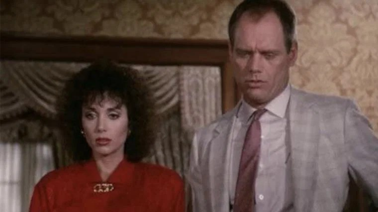
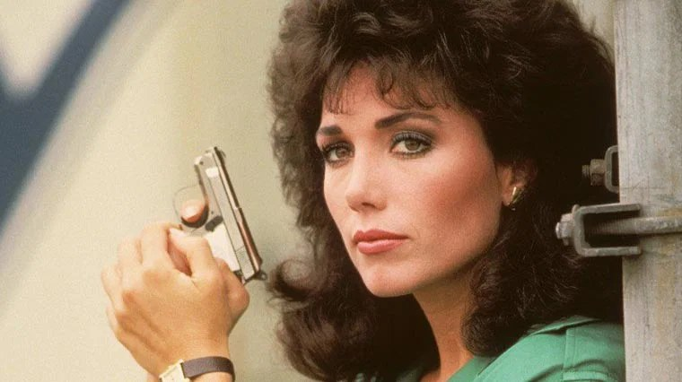

Je devais avoir sept ou huit ans.
Le dimanche, toute la famille se retrouvait chez mes grands-parents. Le repas s'étirait jusqu'au milieu de l'après-midi : les plats qui se succédaient, les conversations des adultes, le café qui n'en finissait pas. Et dans un coin du salon, la télévision restait allumée. Personne ne la regardait vraiment. Elle était là, comme un bruit de fond, comme une présence.
Sur l'écran, il y avait Rick Hunter.
Un grand flic à la mâchoire carrée, un revolver énorme, des voitures qui démarrent en trombe dans les rues de Los Angeles. Je n'entendais pas toujours les dialogues, couverts par les rires et les assiettes. Mais je voyais les images, les poursuites, les portes enfoncées, et cette silhouette immense qui ne reculait jamais.
Rick Hunter, c'était la bande-son des dimanches en famille. Une série qu'on ne regardait pas tout à fait, mais qui faisait partie de la maison.
Ce soir, on monte le son.

Rick Hunter et Dee Dee McCall
Rick Hunter.
Le titre original est simplement Hunter. La série est créée par Frank Lupo et produite par Stephen J. Cannell, l'homme derrière L'Agence tous risques, Riptide et Booker. Elle est diffusée sur la chaîne américaine NBC de 1984 à 1991 : sept saisons et plus de cent cinquante épisodes. Le générique est signé Mike Post et Pete Carpenter, les compositeurs attitrés des séries d'action de l'époque.
Rick Hunter est sergent à la brigade criminelle de la police de Los Angeles. Un flic solitaire, têtu, qui règle les affaires à sa manière, avec un revolver Magnum .44 et un mépris tranquille pour le règlement. Fils d'un ancien truand, il a choisi l'autre côté de la loi, et il ne laisse personne oublier de quel côté il se tient.
Il fait équipe avec le sergent Dee Dee McCall, une enquêtrice aussi coriace que lui, et c'est leur duo qui donne à la série son équilibre : la force brute d'un côté, le sang-froid et l'intelligence de l'autre.
Dans le rôle-titre, Fred Dryer, un ancien joueur de football américain passé par les New York Giants et les Los Angeles Rams. À ses côtés, Stepfanie Kramer.
Rick Hunter, c'est l'Inspecteur Harry version petit écran : un justicier en blouson, des affaires bouclées en cinquante minutes, et un flic qu'on n'avait jamais envie de croiser du mauvais côté.
Au début des années 80, NBC est la chaîne des héros d'action. L'Agence tous risques y fait un triomphe, et ses créateurs, Stephen J. Cannell et Frank Lupo, ont carte blanche. En 1984, Lupo imagine un policier à l'ancienne, un dur à cuire dans la lignée de l'Inspecteur Harry, transposé sur le petit écran.
Pour l'incarner, la production choisit un nom inattendu : Fred Dryer. Ce colosse de près de deux mètres a passé plus de dix ans sur les terrains de football américain, avant de raccrocher en 1981 pour tenter sa chance comme acteur. Il a même été envisagé pour le rôle principal de la sitcom Cheers. Il trouve finalement son personnage avec Rick Hunter, auquel son physique donne une présence immédiate.
Face à lui, Stepfanie Kramer prête ses traits au sergent Dee Dee McCall. Le duo fonctionne tout de suite à l'écran.
Les débuts sont pourtant fragiles. La première saison, très violente et parfois caricaturale, peine à trouver son public. NBC maintient la série et confie la production à Roy Huggins, vétéran de la télévision américaine, créateur du Fugitif. Il rend Hunter plus crédible, plus proche de la réalité du travail policier. Les audiences décollent, et la série s'installe parmi les rendez-vous solides de la chaîne.
Le tournage se fait en décors réels, dans les rues de Los Angeles : ses quartiers populaires, ses entrepôts, ses autoroutes. Au fil des saisons, Fred Dryer s'implique de plus en plus, jusqu'à réaliser lui-même certains épisodes.
En 1990, après six saisons, Stepfanie Kramer quitte la série. La septième et dernière saison continue sans elle, avec de nouvelles partenaires, mais le cœur du duo n'y est plus. La série s'arrête en 1991.
Hunter reviendra plusieurs fois : un téléfilm en 1995, puis de nouveaux téléfilms et une courte relance au début des années 2000, avec Stepfanie Kramer de retour aux côtés de Fred Dryer.

Le sergent Dee Dee McCall
Los Angeles, milieu des années 80.
Le sergent Rick Hunter travaille à la brigade criminelle de la police de la ville. Il a ses méthodes, et sa hiérarchie ne les apprécie pas. Il frappe aux portes un peu trop fort, va chercher les suspects là où personne ne veut aller, et ne lâche jamais une enquête tant que le coupable court encore.
Son passé le rend différent des autres flics. Il a grandi dans une famille liée au crime organisé. Il connaît la rue, ses codes, ses mensonges. Il a choisi l'autre camp, mais il n'a rien oublié.
À ses côtés, le sergent Dee Dee McCall. Intelligente, déterminée, aussi courageuse que lui, elle sait tenir tête aux criminels comme à son propre partenaire. Ensemble, ils forment un duo complémentaire, fait de confiance, de chamailleries et d'une amitié solide.
Chaque épisode les lance sur une nouvelle affaire : un meurtre dans les quartiers chics, un réseau de trafiquants, un tueur qui défie la police, un témoin à protéger. Les enquêtes les mènent des villas de Beverly Hills aux docks du port, des bars enfumés aux entrepôts abandonnés.
Et au bout de chaque piste, la même certitude : quand Rick Hunter est sur une affaire, le coupable finit toujours par le croiser.
Rick Hunter est un enfant direct du cinéma policier des années 70 et 80. On y retrouve tout ce qui faisait l'Inspecteur Harry ou les films de Charles Bronson : un flic solitaire, une ville gangrenée par le crime, une hiérarchie trop prudente et un héros qui préfère l'action aux procédures. La série transpose cette formule à la télévision avec une efficacité redoutable.
Sa force tient d'abord à son personnage principal. Fred Dryer n'a pas le jeu d'un grand acteur dramatique, mais il possède quelque chose de plus rare : une présence. Sa carrure, sa voix calme et son regard impassible suffisent à imposer le personnage. Hunter n'a pas besoin de crier pour faire peur. Il lui suffit d'entrer dans une pièce.
Mais la série ne repose pas seulement sur lui. Dee Dee McCall en est le véritable contrepoids. À une époque où les femmes flics restent rares à la télévision, elle n'est ni une assistante ni une faire-valoir. Elle mène les enquêtes, se bat, prend des risques, et sauve souvent son partenaire. Leur relation, faite de complicité et de respect, évite soigneusement l'histoire d'amour attendue, et c'est ce qui la rend si attachante.
La série a aussi su évoluer. Les premiers épisodes misent sur la violence et l'humour un peu appuyé. Ensuite, Hunter devient plus sérieux, plus réaliste, et s'attaque à des sujets plus sombres : la drogue, les gangs, la corruption, la violence faite aux femmes. Sous ses airs de série d'action, elle parle de la ville et de ses blessures.
Enfin, il y a l'atmosphère. Los Angeles est filmée sans glamour : des rues écrasées de soleil, des parkings, des terrains vagues, des entrepôts. Avec la musique de Mike Post, les voitures qui crissent et les fusillades réglées en quelques secondes, Rick Hunter a ce rythme brut et efficace qui faisait le charme des séries de l'époque.
Bien sûr, la formule se répète parfois, et certaines intrigues sentent le fabriqué. Mais Rick Hunter reste l'une des séries policières les plus solides des années 80.

Le sergent Rick Hunter
Rick Hunter n'a pas disparu d'un coup. Elle s'est effacée peu à peu, recouverte par d'autres séries et par l'évolution des goûts.
D'abord, elle a toujours vécu dans l'ombre d'une autre. En 1984, la même chaîne lance Deux flics à Miami, avec ses costumes pastel, sa musique pop et ses images de clip. C'est elle qui a marqué l'époque et les mémoires. Rick Hunter, plus classique, plus brute, faisait son travail sans chercher à révolutionner la télévision.
Ensuite, la série n'a pas d'accessoire mythique. Pas de voiture qui parle comme K 2000, pas de couteau suisse comme MacGyver, pas de bande de mercenaires comme L'Agence tous risques. Son atout, c'était un flic et sa partenaire. C'est solide, mais ça laisse moins d'images iconiques à transmettre.
Sa fin n'a pas aidé non plus. Le départ de Stepfanie Kramer a brisé le duo qui faisait l'âme de la série. La dernière saison, sans Dee Dee McCall, a laissé l'impression d'une histoire qui s'essoufflait. Les retours des années 2000, téléfilms et courte relance, n'ont pas trouvé de vrai public, et ont plutôt brouillé le souvenir.
Il y a aussi le temps. Le flic justicier, qui tire d'abord et pose les questions ensuite, a vite paru daté. Dans les années 90, les séries policières sont devenues plus réalistes, plus chorales, plus complexes. Rick Hunter appartenait à une autre époque.
Enfin, Fred Dryer n'est jamais devenu une star de cinéma. Contrairement à d'autres héros de séries, aucun grand rôle n'est venu raviver le souvenir de son personnage.
Rick Hunter est restée là où beaucoup l'ont connue : dans les après-midi de télévision, en bruit de fond des dimanches. Une série qu'on n'a jamais vraiment oubliée, mais à laquelle on ne pense plus.
Parce que c'est un concentré de télévision des années 80, dans ce qu'elle avait de plus direct et de plus efficace.
Un épisode de Rick Hunter, c'est cinquante minutes sans détour : un crime, une enquête, une poursuite, une confrontation finale. Pas d'intrigue étalée sur dix épisodes, pas de flash-back à rallonge. On s'assoit, et l'histoire commence. Ce plaisir simple est devenu rare.
Parce que le duo Hunter-McCall a gardé toute sa fraîcheur. Deux partenaires qui se font confiance, se taquinent et se protègent, sans jamais céder à la romance obligatoire. Dee Dee McCall, surtout, mérite d'être revue : une héroïne forte et indépendante, à une époque où la télévision en proposait encore peu.
Parce que Los Angeles y apparaît telle qu'elle était, loin des cartes postales. Les rues écrasées de soleil, les quartiers populaires, les entrepôts, les parkings : la série est aussi un document sur une ville et une époque.
Parce que Fred Dryer y impose une présence unique. Sa carrure, son calme et son humour pince-sans-rire font de Rick Hunter un héros attachant, plus nuancé qu'il n'y paraît.
Et parce que, pour beaucoup d'entre nous, revoir Rick Hunter, c'est retrouver bien plus qu'une série. C'est le son d'une télévision allumée dans le salon, les voix de la famille autour de la table, l'odeur du café et les dimanches qui n'en finissaient pas. Une série qu'on écoutait autant qu'on la regardait, et qui revient intacte dès les premières notes du générique.
Certaines séries, on les attendait toute la semaine. D'autres faisaient simplement partie du décor, comme la nappe du dimanche ou l'horloge du salon.
Rick Hunter, pour moi, c'était ça. J'avais sept ou huit ans. Chez mes grands-parents, la famille réunie autour de la table, les repas qui duraient jusqu'au milieu de l'après-midi, et dans un coin, la télévision allumée. Un grand flic au revolver énorme, une partenaire qui ne baissait jamais les yeux, des poursuites dans les rues de Los Angeles. Je ne suivais pas toujours les histoires. Mais je les entendais, je les voyais du coin de l'œil, et elles s'installaient en moi sans que je m'en rende compte.
Des années plus tard, quand j'entends les premières notes du générique, je ne revois pas seulement Rick Hunter. Je revois cette table, ces dimanches, ces voix. Une époque où la télévision n'était pas un écran qu'on fixait seul, mais une présence qui accompagnait la famille.
Rick Hunter n'a jamais été la série la plus célèbre des années 80. Mais elle a été, pour beaucoup d'entre nous, la bande-son des dimanches.
La cassette est dans le lecteur. On rembobine.
Titre original
Hunter
Pays
États-Unis
Genre
Policier / Action
Diffusion
NBC, 1984–1991 (7 saisons)
Créateur
Frank Lupo
Producteur
Stephen J. Cannell
Musique
Mike Post · Pete Carpenter
Fil conducteur
Séries TV cultes — EP. 04
SOMEDAY — SÉRIES EP. 04